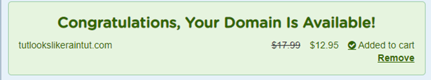
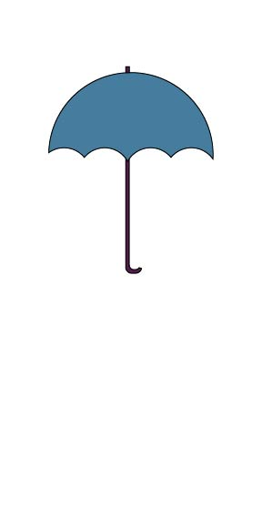

The purpose of this site is to allow the client to display local community events and the weather for a few cities in Southern Idaho. Preston, Soda Springs, and Fish Haven will be the three cities showcased. The goal is to provide updated weather for different events. Community members will be able to post and read about events happening near them. There will be a gallery of pictures and contest once a month for a free ticket based on the best picture. The objectives would include the ability to connect as a community by supporting local businesses and providing an opportunity to meet.
The available domain name I found is "tutlookslikeraintut.com"
The logo is an umbrella for now. I think I would like to add something to show other events are happening. Maybe in the background.
